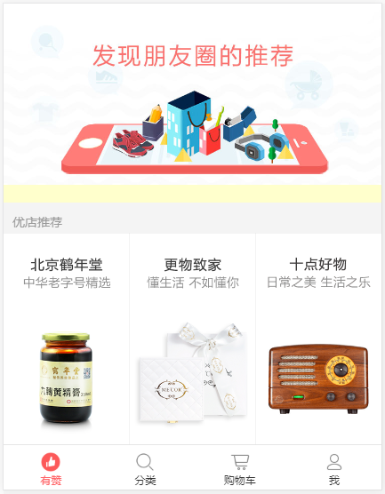
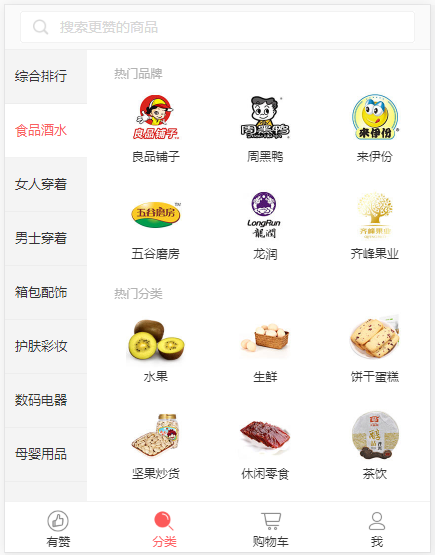
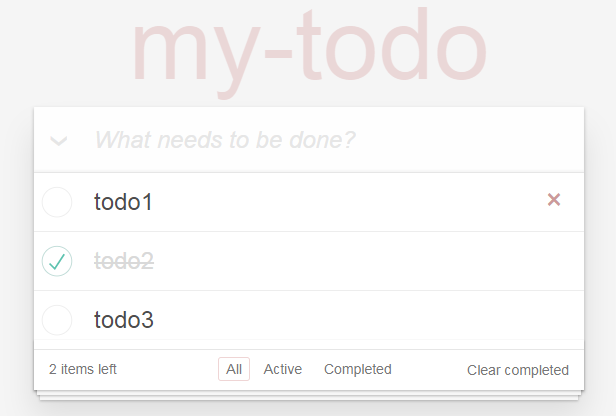
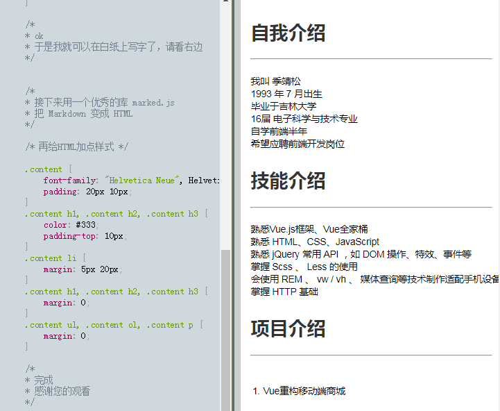
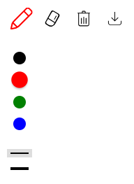
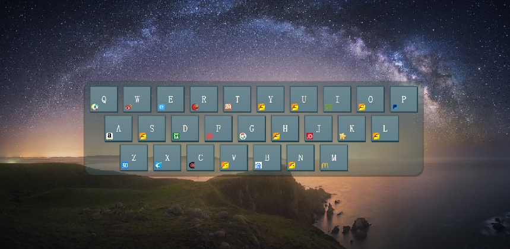
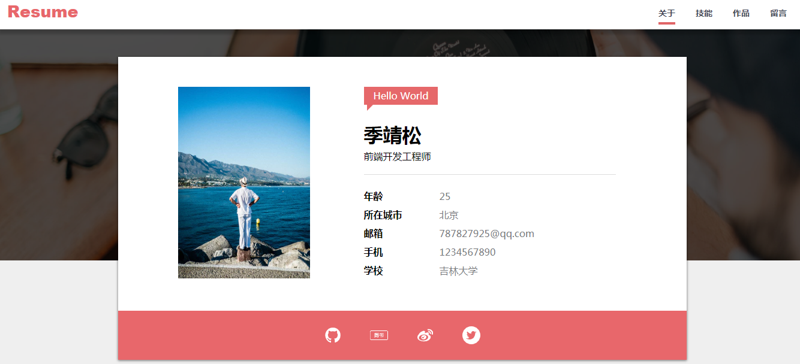

-
- Basic info. 基本信息
- 在线版简历链接: 我的简历
- 个人信息: 季靖松 / 男 / 1993.07.05
- 教育背景: 2012.9 -- 2016.7 吉林大学 电子科学与技术
- 工作经历: 2016.7 -- 2018.7 京东方科技集团 工艺工程师
- 应聘岗位: 前端开发工程师
- 个人博客: https://www.jianshu.com
- GitHub: https://github.com/jijingsong
-
- My Project. 个人项目
-
Vue.js重构移动端商城页面 源代码 预览
关键词：Vue、Vue-cli、Vue-Router、Vuex、axios、webpack、mockjs
描述：该项目利用Vue.js对移动端商城项目进行重构，包括数据的获取、渲染、触底加载；底部导航组件；轮播组件；分类页功能实现；列表页的开发；详情页的开发；购物车的开发；路由配置；地址列表和地址表单的开发；组件的数据通信方式；状态管理，本项目后端数据均为rap平台mock的数据
  -
基于Vue的TodoList应用 源代码 预览
关键词：Vue、Vue-cli、webpack、html、js
描述：该项目是基于Vue的一个在线todo应用，可以用来记录、编辑、删除、筛选未完成和已完成事件、清除已完成事件等，
 -
会动的简历 源代码 预览
关键词：JavaScript、HTML5、CSS3
描述：这是一个可以动态观看的简历，展示写代码的过程，利用prism.js将代码高亮，利用marked.js将Markdown转换为HTML
 -
我的画板 源代码 预览
关键词：JavaScript、Canvas、HTML5、CSS
描述：该项目是一个利用Canvas API实现的在线画板，并且包含了画笔颜色选择、粗细选择、橡皮擦、清空、下载、移动端touch等功能
 -
键盘导航 源代码 预览
关键词：JavaScript、Canvas、响应式、jQuery
描述：该项目通过监听键盘keypress事件来进行网址导航，同时可以编辑按键对应网址，自动获取网站图标，利用LocalStorage存储，保证页面刷新后依然保存用户编辑后状态
 -
我的简历 源代码 预览
关键词：MVC、原生JavaScript、CSS3、LeanCloud
描述：该项目是一个在线简历网站，包含了导航栏自动跳转、tween.js缓动动画、基于LeanCloud数据库的在线留言板，并且采用了MVC思想对项目进行了封装

-
- Skill. 技能清单
前端
-
HTML5 / CSS3
能够编写语义化的 HTML，熟悉CSS布局、动画、过渡、媒体查询等技术
熟悉移动端适配方案，viewport、媒体查询、动态REM等
会使用 Less Sass 等CSS预处理工具
-
JavaScript
熟悉原生 Javascript，DOM API，理解原型、原型链、闭包、Ajax等
熟悉 ES6 新特性，如let、const、箭头函数、字符串模板、Promise等
-
框架 / 库
熟悉Vue.js框架，会使用vue-router、vuex、axios等
了解 Webpack 模块化打包工具的基本配置
会使用jQuery、Bootstrap等库
-
其他
熟悉 HTTP 基本知识
理解 Cookie、Session、LocalStorage、SessionStorage
了解前端性能优化方面的一些知识